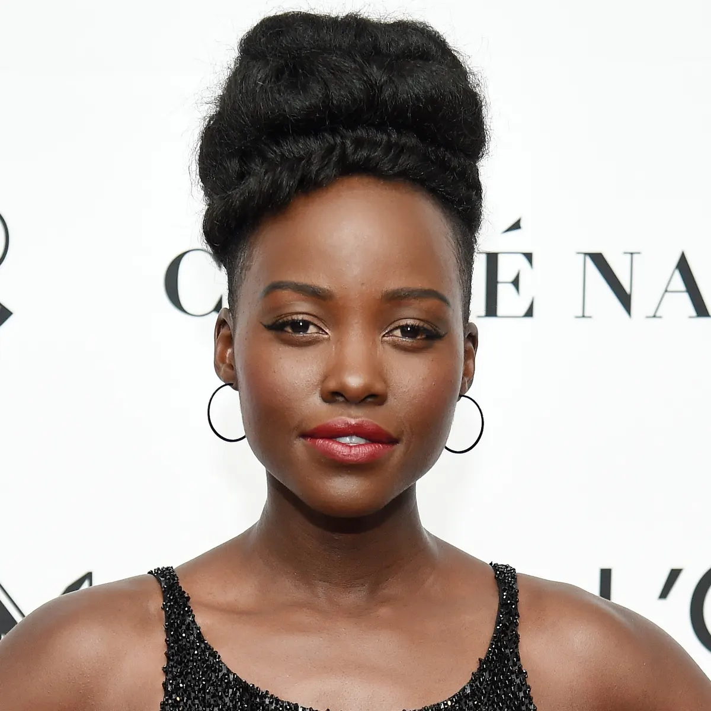

-

Chadwick Boseman (T'Challa / Pantera Negra -

Lupita Nyong'o (Nakia) -
Michael B. Jordan (N'Jadaka / Erik "Killmonger" Stevens)
A importância do Pantera Negra e ídolos de diferentes identidades
Sempre fui de assistir muitos desenhos animados, Dragon Ball Z, Naruto, One piece, entre outros. Sempre me imaginava sendo um Super-Herói, o problema é que pra se parecer com um Super Sayajin era necessário ser Loiro.
Nesse contexto, me encantei quando vi Super Shock, pela primeira vez eu tinha em meus olhos um herói negro. Logo após, fui apresentando ao Pantera Negra, mas infelizmente, a DC fez uma péssima adaptação e colocou um herói branco para interpretar o BP.
Somente com o Filme pude ver a riqueza de elementos e historicidade que era o mundo de Wakanda, e pela primeira vez, me senti representado, como se fosse parte daquele reino.
Em 2018, após o assistir "Pantera Negra", fiquei totalmente impactado por tudo ali apresentado, os pensamentos me fizeram questionar sobre: Quantos ídolos temos com os mesmos aspectos físicos que o meu? Nenhum herói da minha infância se parecia comigo.
Black Panther's da Vida Real
Os Panteras Negras foram fundados, em 1966, por dois universitários negros chamados Huey Newton e Bobby Seale. Ambos moravam em Oakland, na Califórnia, e criaram esse grupo como forma de combater a violência policial. Isso porque, com o contexto de protestos, esse tipo de violência intensificou-se, uma vez que muitos brancos, movidos pelo racismo, reagiam com violência contra os protestos.
Assim, esses dois estudantes resolveram criar uma organização para acompanhar as operações policiais e impedir que violência contra afro-americanos fosse realizada. O grande diferencial é que os Panteras Negras pretendiam acompanhar essas operações munidos de armamento. Eles justificavam isso por meio da 2ª Emenda da Constituição dos Estados Unidos, que dava direito aos cidadãos de portar armas.
Os Panteras Negras, nos seus primeiros anos de atuação, agiam de forma intimidatória contra pessoas que fossem racistas. No entanto, aos poucos, o grupo desenvolveu-se e aderiu novas pautas, até que se tornou um partido